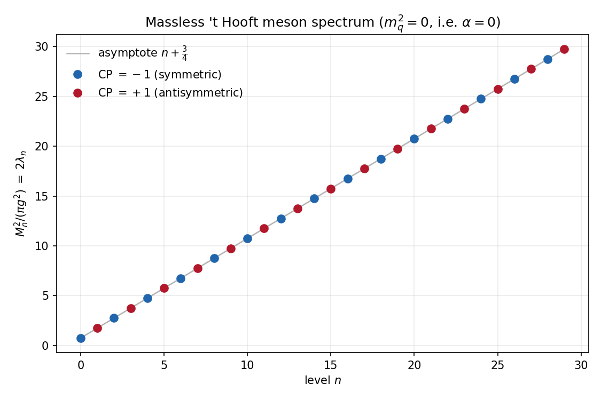
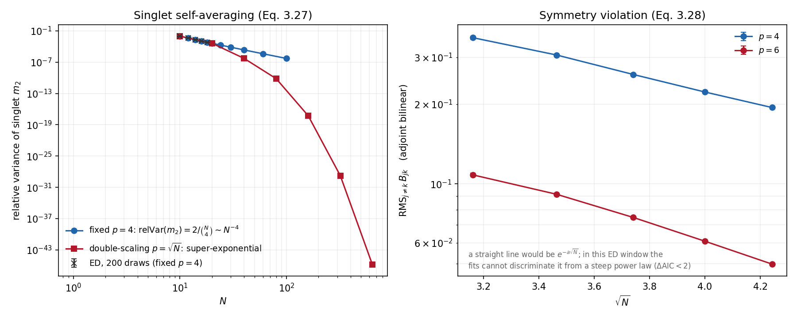
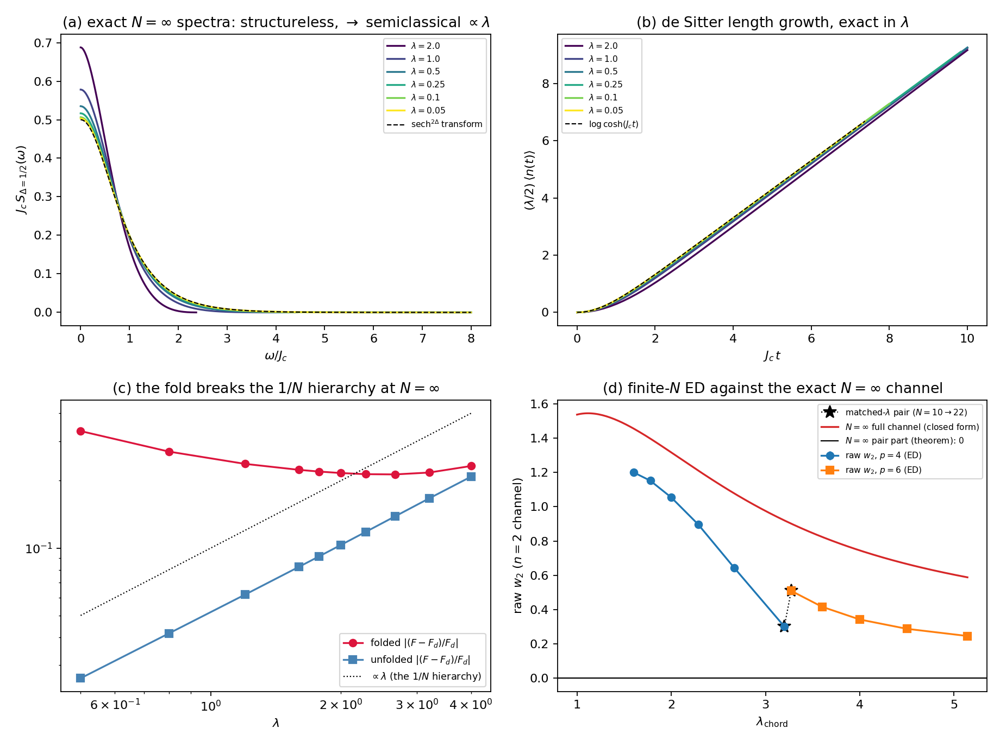
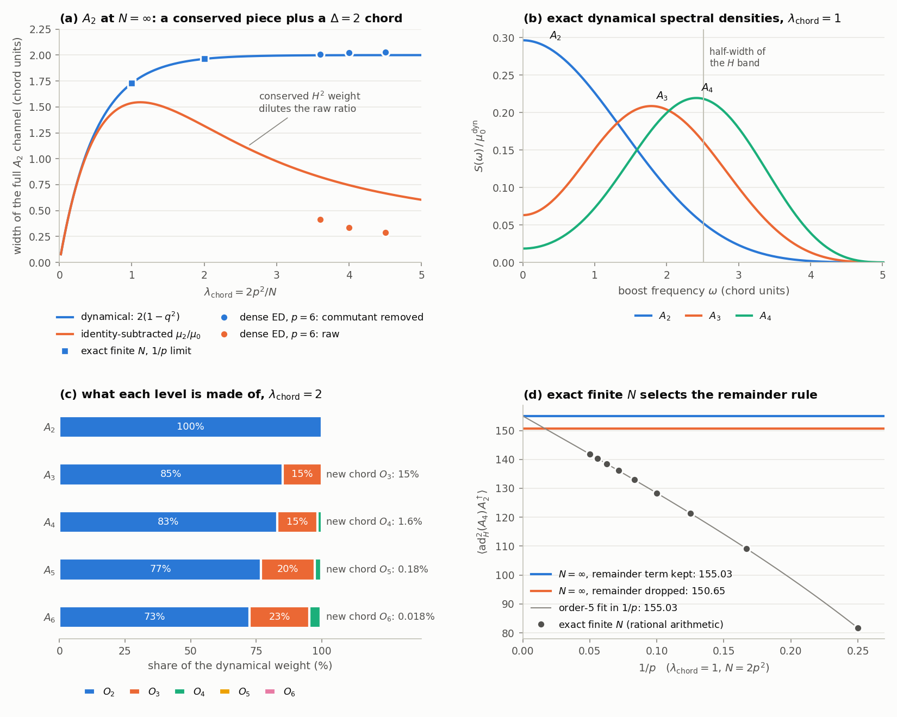
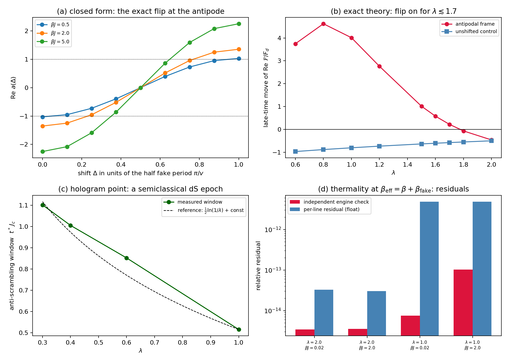

Testing DSSYK∞ ↔ the 't Hooft model, from the ground up
Miyashita, Sekino and Susskind propose that double-scaled SYK at infinite temperature is a hologram of a de Sitter static patch whose bulk matter is the 't Hooft model: two-dimensional QCD with mesons. Their own "best test" is that the singlet spectrum of SYK should match the 't Hooft meson tower. Nobody had run it. This repository computes both sides as exactly as it can, and says precisely what holds, what fails, and what is still missing.
Start hereThe question being tested
The proposal (2506.18054v3, 2607.05678) is a chain of claims with different confidence levels:
- Assumed: DSSYK∞ is a holographic dual of a JT–de Sitter static patch.
- Quasi-derived: single disorder realizations are self-averaging, so an O(N)/U(N) symmetry emerges.
- Argued by counting: the bulk matter is the 't Hooft model (U(N) QCD₂ with one flavor, massless quark) with ḡ² = p²/N and ᾱ = p².
- Qualitative: the SYK singlet operators Mn = Σ c†(dⁿ/dtⁿ)c map to the 't Hooft mesons with CP = (−1)n+1. The authors call matching these spectra "the best test of the duality".
Two limits matter throughout, and confusing them is the easiest mistake to make. Chord diagrams are exact in the double-scaled limit (λ = 2p²/N fixed). The paper's 't Hooft limit fixes p instead and sends N → ∞. Both end in the same semiclassical corner.
OrientationHow to read this walkthrough
The project is built in layers. Each one rests on the one below it, and each states its results with an explicit status. Click a layer to jump to it.
Status labels used below: theorem proved; verified exact identity checked in computer algebra, not proved; observation a pattern, not derived; open not done, with what it would take.
Layer 0 · thooft-target/The yardstick: the 't Hooft meson spectrum
A test needs a target. 't Hooft's equation for a meson's light-cone wavefunction is solved at the duality's mass point, renormalized mq² = 0 (α = 0). That is a regular, gapped theory, and not the chiral limit α = −1, a distinction that is easy to get wrong. The solver uses a Chebyshev basis that already has the exact endpoint behaviour, so the matrix elements are exact rationals and convergence is variational.

What is checked 61 tests
- 40 levels to 17–21 digits, truncation error measured as K⁻⁶.
- FLZ Tables 1–2 (n ≤ 29) to their last printed digit. At n = 19 the published value is itself off by 1e-12.
- All sixteen FLZ sum rules, plus 7ζ(3) and 2.
- The FLZ constants d₊, d₋ converged, with d₋/d₊ = √2/π to 2e-15.
- An independent sine-basis solver and a Jacobi solver for α ≠ 0.
- The 2d vacuum condensate ε(0) = −0.0407 Ncg², now matched to a 30-digit reference to 5e-16 on every platform.
Why this layer matters. Any claimed match has to land on these numbers. The yardstick is solved, so every remaining uncertainty lies on the SYK side or in the dictionary between the two.
Layer 1 · syk-self-averaging/SYK at finite N: exact identities and exact averages
Exact operator identities
In the Majorana form the singlet channels are An = Σi ψi(adH)ⁿψi. Conjugating by ψi flips the sign of the part Hi of H that contains flavor i. That gives two per-realization identities, true at any N:
A general mixed-word identity writes every An the same way. It is derived, and checked against dense matrices for n ≤ 5.
Self-averaging, exactly closed form
The paper estimates symmetry violation from two diagrams. Here the variances are computed exactly by Wick contraction, with no sampling:

An exact moment engine, no diagonalization
Disorder-averaged traces reduce to sums over how random p-subsets overlap, evaluated in exact rational arithmetic at any N. At fixed p the A₂ channel's mean-square frequency is an exact law, certified out of sample at p = 8, 10, 12:
Layer 2 · duality/chord*.pyChords: the exact N = ∞ machinery
In the double-scaled limit every moment is a sum over chord diagrams. Each crossing costs a power of q = e−λ. An operator of "dimension" Δ is a matter chord whose crossings cost qΔ. Everything at N = ∞ in this repo is computed this way, exactly.
Theorem 1: the flavor-pair part is frozen theorem
The i ≠ j part of every An channel has a chord image that is a polynomial in the chord Hamiltonian. A three-term recursion forces this. So every spectral moment of that part vanishes, at every λ, every n and every matter weight. LaTeX manuscript.
This was once over-read as "the tower is invisible at N = ∞" (ERRATA E1). It is not: the flavor-diagonal part carries weight of the same order. That led to theorem 2.
Theorem 2: the full A₂ channel theorem
Sum over flavors first. Then A₂ is the word H² with its two monomials weighted by how many indices they share, which is Poisson(λ/2) at N = ∞. A sign-reversing involution on chord diagrams gives, exactly:
At λ = 2, 32.9% of the weight is conserved and the dynamical width is 1.963369. Two checks that don't use the proof agree. Exact finite-N rational moments extrapolate to 1.96336. Dense ED with the whole commutant of H projected out gives 2.03, 2.03, 2.01 against 2.00.

Layer 3 · duality/singlet_tower.pyThe singlet tower, level by level
Above n = 2 the same construction runs level by level. Each An is assembled from blocks Ωk = ΣiHiHkHi. Each block is solved into matter chords from its cross-correlators with the lower blocks, and every remaining two-point word is then a check.
verified for n = 3…8, with zero residual in exact rational arithmetic at three generic points (176 and 257 checked words per point at n = 7, 8). Only n = 2 is proved.
Three patterns, predicted and then tested
Levels 3–6 suggested three regularities. Levels 7 and 8 were computed afterwards to test them, using a parallel builder for the 16- and 18-node diagram tables. All three held:
| pattern (from n ≤ 6) | prediction for n = 7, 8 | result |
|---|---|---|
| subleading coefficient (q + … + qk)/(1 + qk+1) | holds at k = 5, 6 | exact at all three test points ✓ |
| norm of the new chord ∝ λ2⌊n/2⌋ | λ⁶ at n = 7, λ⁸ at n = 8 | norm/λ⁶ and norm/λ⁸ converge to finite limits ✓ |
| as λ → 0 even chords fade, odd chords survive | O₇ survives, O₈ fades | O₇ settles near 0.006% of A₇ and 0.014% of A₈; O₈ falls ∝ λ ✓ |
Why it is interesting. The dimensions that survive the semiclassical limit are 2, 3, 5, 7, the same pattern as the large-p SYK bilinear spectrum h = 2, 3, 5, 7, … (Maldacena–Stanford). That map has exact λ → 0 limits through n = 7 (duality/conformal_tower.py). Without the chord rule's grade remainder, every An through n = 7 is exactly a one-dimensional conformal OPE of the bilocal, in the frame u = tanh(√λ t), with the dimension-m chord a primary of weight m. The remainder adds one ladder rung, so the full channels are not exactly conformal. Odd survival follows from the norm law, and the odd OPE coefficients equal N(1 − 2/(h(h−1)))² times the Gross–Rosenhaus IR couplings at h = 3, 5, 7. The OPE structure is verified through n = 7; the relation to Gross–Rosenhaus is identified, not derived.

Layer 4 · duality/BOOST.md, HORIZON.mdBoost frequency is not mass: the Rindler calibration
The SYK Hamiltonian generates boosts, not time translations of a rest frame. Even a single particle of fixed mass has a continuous boost-frequency spectrum, with mass-encoding nodes rather than a peak. Layer 3's continua therefore can't be read as masses directly. They need a calibration, and the exactly solvable one is a free field near a Rindler horizon.
The calibration table
| bulk content | boost-frequency density |
|---|---|
| one field of mass M | Kiω/a(M/a)²/(πa): entire, no poles |
| any gapped mass spectrum | entire, no poles |
| density ∝ M2Δ−1, gapless | ∝ |Γ(Δ + iω/a)|²: a ladder |
The last row is the Mellin transform of K²ν. The map from mass density to boost density is invertible, so a ladder is a gapless, scale-invariant mass spectrum.
The result. At N = ∞ and small λ, the Majorana singlet channels have a gapless, scale-invariant Rindler mass spectrum (Δ = 2, 3, 5, 7 through n = 8) at the string-scale spacing a = 2√2 JMSS, with no gap and no discrete masses. So the paper's small-λ prediction cannot be met by these N = ∞ two-point functions. It has to come from 1/N corrections, the Dirac channels, other operators, or a non-local dictionary. This fits the paper's own picture of a hot, deconfined stretched horizon.
Layer 5 · syk-self-averaging/thooft_limit.pyThe paper's own limit: fixed p, by shape
MSS compare with the 't Hooft model at fixed ᾱ = p² ("since that's where the calculations are done"). The exact finite-N laws can be taken to that limit directly, and they give the channels' moments as closed forms in p, fit on the smallest p and checked exactly on the larger ones (p ≤ 12):
Moments do not fix analytic structure, so none of this decides whether the finite-p spectrum is gapped. That question belongs to layer 7.
Layer 6 · duality/ANTISCRAMBLING.mdThe de Sitter axis: which way do OTOCs grow?
De Sitter shockwaves advance rather than delay, so a dS observer's out-of-time-order correlator should "anti-scramble" (Cui–Kolchmeyer). Harlow–Zhao proposed a mechanism, a Euclidean fold, and explicitly asked for a test in SYK. This repository ran it:
- DSSYK∞ scrambles at every temperature: the growth coefficient a(v) = −1/cos(πv/2) is negative throughout.
- The fold fails at ED sizes and at N = ∞, in the windows checked. It breaks the 1/N hierarchy rather than flipping the sign. This is not a universal no-go.
- A half-fake-period antipodal shift flips the sign semiclassically for λ ≲ 1.7, with two-point thermality at β + βfake to about 1e-12. The anti-scrambling window is transient.

Layer 7 · road_map.mdWhere the project stands
| result | status |
|---|---|
| 't Hooft target: 40 levels, every published table and sum rule | solved |
| Exact self-averaging variances; fixed-p moment laws | closed form |
| Pair channel frozen at N = ∞ (all n, λ, matter weight) | theorem |
| Full A₂ = conserved H² + a Δ = 2 chord | theorem |
| A₃…A₈ = polynomial in H + chords of dimension 2…n | verified |
| As λ → 0, remainder off: chords = weight-m primaries of a conformal OPE | verified n ≤ 7; the full rule adds one ladder rung; odd survival from the norm law |
| Surviving dimensions 2, 3, 5, 7 ↔ large-p h = 2, 3, 5, 7 | observation |
| Odd T = ∞ OPE coefficients = N(1 − kc(h))² × Gross–Rosenhaus | observation exact at h = 3, 5, 7, not derived |
| N = ∞ Rindler mass spectrum gapless, no discrete masses (Majorana) | follows from the above |
| Fixed-p shape laws approach the ladders, with large corrections | exact, fit + held-out checks |
| DSSYK∞ scrambles; fold fails where checked; antipodal flip is transient | measured |
What would move it forward (all need new theory)
- 1/N corrections to the chord density. Do they open a gap or create discrete masses? This is the decisive question, and moments can't answer it; it needs chord rules beyond double scaling. The exact finite-N laws here would test any derivation. open
- The Dirac channels and CP. These are the paper's actual operators. The occupation factor 1 − ni needs its own chord rule; once it exists, layers 2–5 rerun on it. open
- A general-n proof of the decomposition and the λ2⌊n/2⌋ law (the odd survival then follows), perhaps by extending the n = 2 involution bundle by bundle. open
- Why the Gross–Rosenhaus relation holds: derive Ch² = N(1 − kc)² ch² and the rung's subleading weight, and test the predicted dimension-9 norm. open
- The dictionary itself: which state, time and operator map the authors intend. That one answer decides which of the above matters. open
Compute-only items remain (A₄ shapes at fixed p, level 9 at about 20× the n = 8 cost, which would test the predicted dimension-9 norm, a recorded two-day reproduce-slow run), but each now adds little.
DisciplineErrata and scope
Every withdrawn or corrected claim is kept in ERRATA.md, 23 so far, each with what replaced it. The most instructive:
- E1: "the tower is invisible at N = ∞" became the pair theorem plus a full channel that does propagate.
- E4: "the tower turns on toward the corner" turned out to be the rising side of a peak seen through an N ≤ 20 window.
- E21: "no massive component" became "a gapless mass spectrum", the precise statement.
- E22: a misplaced position claim about the A₃ law, caught on review.
Scope that applies everywhere. The N = ∞ tower results are for the Majorana form An, not the paper's Dirac Mn. The Rindler reading assumes a free-field calibration at a fixed distance from the horizon, with a = 2𝒥 as a natural identification rather than one the proposal supplies. No meson mass match is claimed, and no no-go theorem either.
PracticalRepository map and how to reproduce
| folder | what lives there | start with |
|---|---|---|
thooft-target/ | the yardstick: solvers, reference spectrum, condensate | README |
syk-self-averaging/ | ED, exact Wick statistics, exact finite-N laws, fixed-p limit | README |
duality/ | chord engines, tower decomposition, horizon, boost calibration, OTOCs | CHORD.md, HORIZON.md |
notes/ | technical note, singlet-tower note, two LaTeX manuscripts | author-facing note |
scripts/ | the logged snapshot runner | REPRODUCIBILITY.md |
papers/ | index and fetch script for every cited paper (PDFs not distributed) | papers/README.md |
python3 -m venv .venv && . .venv/bin/activate
python -m pip install -e '.[dev]'
make test # 721 fast tests, ~3 min
make reproduce # fast producers + figures, minutes
python scripts/validate.py reproduce-slow # every campaign, logged; about two days
cd duality && python singlet_tower.py --deep 5 6 # levels n = 7, 8 (~25 min on 6 cores)Main documents: README.md · road_map.md · singlet-tower-note.md · BOOST.md · ANTISCRAMBLING.md · ERRATA.md